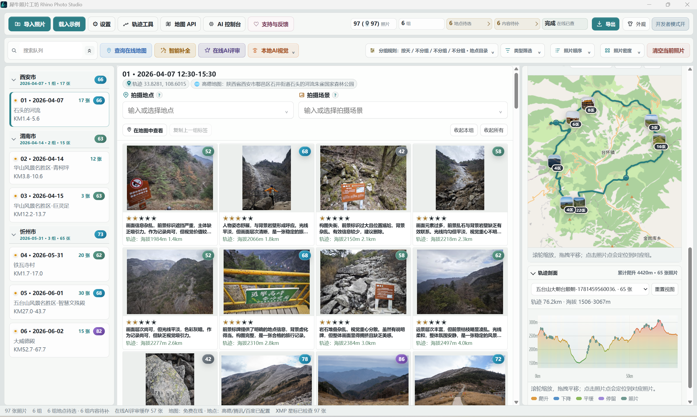
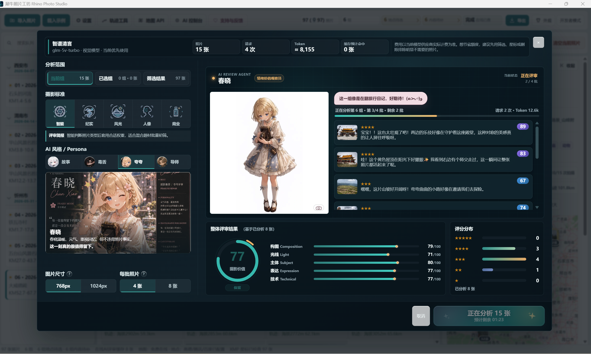
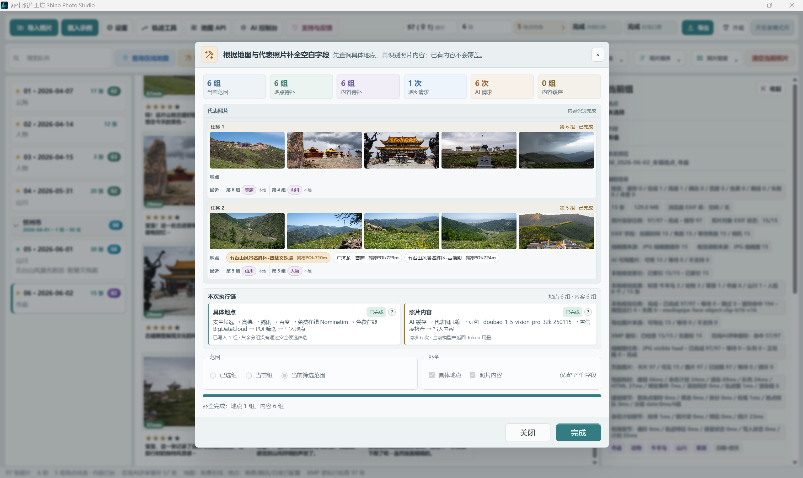

每一次拍摄回来，我们都会带回几百甚至几千张照片。真正困难的不是拍摄，而是整理。
我自己也是一个喜欢旅行、户外和摄影的人。我经历过拍下大量照片却没有时间整理，硬盘越来越满却不知道哪些照片值得保存，也经历过走过很远的路，却很难快速整理出属于那段旅程的记录。
犀牛照片工坊不会替你拍摄，也不会替你决定什么是美。它只是帮助你在多年以后重新打开照片时，依然能找到那些值得回忆的瞬间。
一款面向摄影、户外、徒步和自驾旅行用户的本地照片管理工具。它帮助你从几百甚至几千张照片里，重新找到值得留下、值得分享、值得回忆的瞬间。

结合构图、光影、主体、表达和技术质量，帮助你从大量照片中快速发现值得保留的作品。
AI 不替代你的判断。它负责发现，你负责决定，并通过星标与 XMP 回到熟悉的后期流程。
结合 GPS、地图和拍摄信息，让照片不只是文件，而是一段可以重新浏览的完整旅程。


每一次拍摄回来，我们都会带回几百甚至几千张照片。真正困难的不是拍摄，而是整理。
我自己也是一个喜欢旅行、户外和摄影的人。我经历过拍下大量照片却没有时间整理，硬盘越来越满却不知道哪些照片值得保存，也经历过走过很远的路，却很难快速整理出属于那段旅程的记录。
犀牛照片工坊不会替你拍摄，也不会替你决定什么是美。它只是帮助你在多年以后重新打开照片时，依然能找到那些值得回忆的瞬间。